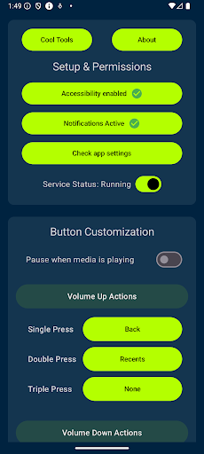
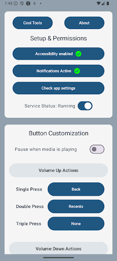

01Why Tactile Controls Still Beat Touchscreens
Touchscreens are flexible, but physical side keys still win whenever looking at or stretching across a 6.7-inch display isn't practical:
Eyes-Free Control
Feel the rocker in your pocket to skip tracks or toggle the flashlight while walking, running, or commuting.
One-Handed Reach
Volume keys sit right under your finger—no awkward thumb gymnastics to pull down notifications or hit Back.
Gloves & Rain
Capacitive screens glitch in wet weather or winter gloves; mechanical buttons register every click cleanly.
02The 4 Most Useful Hardware Shortcuts
By separating single clicks from double clicks, triple clicks, and long holds, your volume rocker unlocks flagship-grade shortcuts:
Pocket Music Skipping
Hold Volume Up for next track and Volume Down for previous track on Spotify, YouTube Music, or podcasts—even with the screen off.
Instant Tactical Flashlight
Double-click Volume Up to toggle the camera LED immediately in dark hallways—no blinding lock screen required.
Physical Back & Recents
Bind Volume Down to trigger system Back, Home, or Recents—ideal for one-handed use or broken touch zones.
Notification Shade & Apps
Drop the notification panel or launch Camera, Voice Recorder, or Calculator in one click without stretching to the top bezel.
03Setup in 3 Steps (No Root or ADB)
Unlike risky root mods that trip Play Integrity and break banking apps, Volume Buttons Extended uses Android's official Accessibility API to listen for KEYCODE_VOLUME_UP and KEYCODE_VOLUME_DOWN cleanly in user space.
Install Volume Buttons Extended
Download Volume Buttons Extended from Google Play and open it.
Enable the Accessibility Service
Tap Enable Accessibility Service, locate Volume Buttons Extended under Downloaded Apps in Android Settings, and toggle it On.
Assign Your Button Triggers
Pick Volume Up or Volume Down, choose Single, Double, Triple, or Long Press, and assign media controls, flashlight, navigation, or direct app launches. Optionally enable Pause when media is playing.


04Reliability, Battery & Privacy
Aggressive background killers can put Accessibility services to sleep after hours of idle time. Keep button triggers instant 24/7 with one quick tweak:
- All Android: Open Settings > Apps > Volume Buttons Extended > Battery and choose Unrestricted.
- Xiaomi / HyperOS: Enable Autostart in App Info and lock the app in Recents.
- Samsung One UI: Add it to Never sleeping apps inside Device Care.
Event-Driven Architecture
No continuous sensor polling—the service stays asleep until a physical key interrupt fires, using virtually zero standby battery.
Strict Permissions Scope
Zero cloud analytics or telemetry. Only physical hardware key events are handled—your chats, passwords, and on-screen taps stay untouched.
05Frequently Asked Questions
Do I need root or ADB to remap volume buttons on Android?
No. Android's Accessibility Service API handles physical key events safely without modifying system partitions, rooting, or connecting to a PC.
Will my volume rocker still adjust audio volume normally?
Yes. Leave single presses mapped to default volume behavior and bind double-press, triple-press, or long-press actions for custom shortcuts.
Does screen-off media skipping work with Spotify and YouTube Music?
Yes. Volume Buttons Extended dispatches standard Android media intents (KEYCODE_MEDIA_NEXT and KEYCODE_MEDIA_PREVIOUS), supporting Spotify, YouTube Music, Apple Music, and podcast players.
Does remapping drain battery—or help if my power button is broken?
Standby battery impact is virtually 0% thanks to event-driven key listening. It's also a lifesaver for phones with broken power buttons—you can bind a volume gesture to lock the screen or open the power menu.